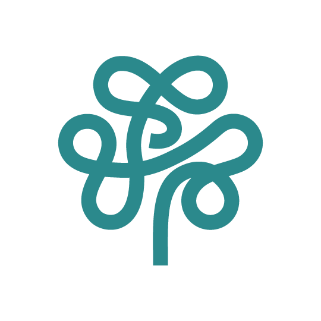

01
التقارير المتاحة
اختاري التقرير لفتح نموذج جديد فارغ.
باقة أساس الحرية المالية
البيانات الشخصية · المشكلة · الأهداف بالتواريخ والمبالغ ·
الملاحظات السلوكية · الأفكار · الشعور · خطتي للقادم · التوقيعات.

تقارير قادمة
تضاف باقات كاش ناس الأخرى هنا بنفس التصميم وبنفس قائمة العملاء ..
بدون أي تغيير في طريقة العمل.
02
ملفات العملاء
اضغطي على الملف لفتحه واستكماله في تقريره.
03
النسخ الاحتياطية
الملفات محفوظة على هذا الجهاز · خذي نسخة بشكل دوري.
تصدير: يجمع كل ملفات العملاء في ملف واحد لنقله لجهاز آخر ·
استيراد: يدمج نسخة سابقة مع الموجود ولا يمسح شيئا.